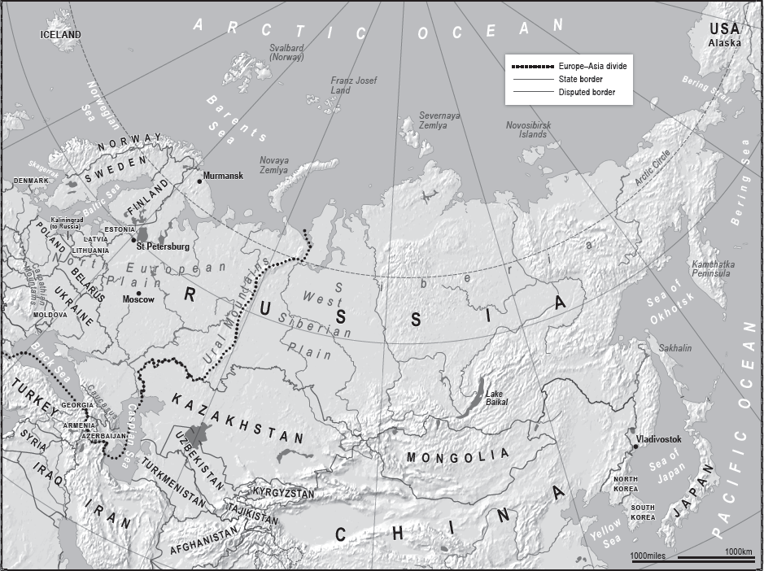
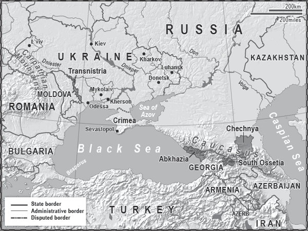

Vast (adjective; vaster, vastest): of very great area or extent; immense.

RUSSIA IS VAST. IT IS VASTEST. IMMENSE. IT IS SIX MILLION SQUARE miles vast, eleven time zones vast; it is the largest country in the world.
Its forests, lakes, rivers, frozen tundra, steppe, taiga and mountains are all vast. This size has long seeped into our collective consciousness. Wherever we are, there is Russia, perhaps to our east, or west, to our north or south – but there is the Russian Bear.
It is no coincidence that the bear is the symbol of this immense size. There it sits, sometimes hibernating, sometimes growling, majestic, but ferocious. Bear is a Russian word, but the Russians are also wary of calling this animal by its name, fearful of conjuring up its darker side. They call it medved, ‘the one who likes honey’.
At least 120,000 of these medveds live in a country which bestrides Europe and Asia. To the west of the Ural Mountains is European Russia. To their east is Siberia, stretching all the way to the Bering Sea and the Pacific Ocean. Even in the twenty-first century, to cross it by train takes six days. Russia’s leaders must look across these distances, and differences, and formulate policy accordingly; for several centuries now they have looked in all directions, but concentrated mostly westward.
When writers seek to get to the heart of the bear they often use Winston Churchill’s famous observation of Russia, made in 1939: ‘It is a riddle wrapped in a mystery inside an enigma’, but few go on to complete the sentence, which ends, ‘but perhaps there is a key. That key is Russian national interest.’ Seven years later he used that key to unlock his version of the answer to the riddle, asserting, ‘I am convinced that there is nothing they admire so much as strength, and there is nothing for which they have less respect than for weakness, especially military weakness.’
He could have been talking about the current Russian leadership, which despite being now wrapped in the cloak of democracy, remains authoritarian in its nature with national interest still at its core.
When Vladimir Putin isn’t thinking about God, and mountains, he’s thinking about pizza. In particular, the shape of a slice of pizza – a wedge.
The thin end of this wedge is Poland. Here, the vast North European Plain stretching from France to the Urals (which extend 1,000 miles south to north, forming a natural boundary between Europe and Asia) is only 300 miles wide. It runs from the Baltic Sea in the north to the Carpathian Mountains in the south. The North European Plain encompasses all of western and northern France, Belgium, the Netherlands, northern Germany and nearly all of Poland.
From a Russian perspective this is a double-edged sword. Poland represents a relatively narrow corridor into which Russia could drive its armed forces if necessary and thus prevent an enemy from advancing towards Moscow. But from this point the wedge begins to broaden; by the time you get to Russia’s borders it is over 2,000 miles wide, and is flat all the way to Moscow and beyond. Even with a large army you would be hard-pressed to defend in strength along this line. However, Russia has never been conquered from this direction partially due to its strategic depth. By the time an army approaches Moscow it already has unsustainably long supply lines, a mistake that Napoleon made in 1812, and that Hitler repeated in 1941.
Likewise, in the Russian Far East it is geography that protects Russia. It is difficult to move an army from Asia up into Asian Russia; there’s not much to attack except for snow, and you could only get as far as the Urals. You would then end up holding a massive piece of territory, in difficult conditions, with long supply lines and the ever-present risk of a counter-attack.
You might think that no one is intent on invading Russia, but that is not how the Russians see it, and with good reason. In the past 500 years they have been invaded several times from the west. The Poles came across the North European Plain in 1605, followed by the Swedes under Charles XII in 1708, the French under Napoleon in 1812, and the Germans twice, in both world wars, in 1914 and 1941. Looking at it another way, if you count from Napoleon’s invasion of 1812, but this time include the Crimean War of 1853–6 and the two world wars up to 1945, then the Russians were fighting on average in or around the North European Plain once every thirty-three years.
At the end of the Second World War in 1945, the Russians occupied the territory conquered from Germany in Central and Eastern Europe, some of which then became part of the USSR, as it increasingly began to resemble the old Russian Empire. In 1949 the North Atlantic Treaty Organization (NATO) was formed by an association of European and North American states, for the defence of Europe and the North Atlantic against the danger of Soviet aggression. In response, most of the Communist states of Europe – under Russian leadership – formed the Warsaw Pact in 1955, a treaty for military defence and mutual aid. The Pact was supposed to be made of iron, but with hindsight by the early 1980s was rusting, and after the fall of the Berlin Wall in 1989 it crumbled to dust.
President Putin is no fan of the last Soviet President, Mikhail Gorbachev. He blames him for undermining Russian security and has referred to the break-up of the former Soviet Union during the 1990s as ‘a major geopolitical disaster of the century’.
Since then the Russians have watched anxiously as NATO has crept steadily closer, incorporating countries which Russia claims it was promised would not be joining: the Czech Republic, Hungary and Poland in 1999, Bulgaria, Estonia, Latvia, Lithuania, Romania and Slovakia in 2004 and Albania in 2009. NATO says no such assurances were given.
Russia, like all great powers, is thinking in terms of the next 100 years and understands that in that time anything could happen. A century ago, who could have guessed that American armed forces would be stationed a few hundred miles from Moscow in Poland and the Baltic States? By 2004, just fifteen years from 1989, every single former Warsaw Pact state bar Russia was in NATO or the European Union.
The Moscow administration’s mind has been concentrated by that, and by Russia’s history.
Russia as a concept dates back to the ninth century and a loose federation of East Slavic tribes known as Kievan Rus’, which was based in Kiev and other towns along the Dnieper River, in what is now Ukraine. The Mongols, expanding their empire, continually attacked the region from the south and east, eventually overrunning it in the thirteenth century. The fledgling Russia then relocated north-east in and around the city of Moscow. This early Russia, known as the Grand Principality of Muscovy, was indefensible. There were no mountains, no deserts and few rivers. In all directions lay flatland, and across the steppe to the south and east were the Mongols. The invader could advance at a place of his choosing, and there were few natural defensive positions to occupy.
Enter Ivan the Terrible, the first Tsar. He put into practice the concept of attack as defence – i.e., beginning your expansion by consolidating at home and then moving outwards. This led to greatness. Here was a man to give support to the theory that individuals can change history. Without his character of both utter ruthlessness and vision, Russian history would be different.
The fledgling Russia had begun a moderate expansion under Ivan’s grandfather, Ivan the Great, but that expansion accelerated after the younger Ivan came to power in 1533. It encroached east on the Urals, south to the Caspian Sea and north towards the Arctic Circle. It gained access to the Caspian, and later the Black Sea, thus taking advantage of the Caucasus Mountains as a partial barrier between it and the Mongols. A military base was built in Chechnya to deter any would-be attackers, be they the Mongol Golden Hordes, the Ottoman Empire or the Persians.
There were setbacks, but over the next century Russia would push past the Urals and edge into Siberia, eventually incorporating all the land to the Pacific coast far to the east.
Now the Russians had a partial buffer zone and a hinterland – strategic depth – somewhere to fall back to in the case of invasion. No one was going to attack them in force from the Arctic Sea, nor fight their way over the Urals to get to them. Their land was becoming what we know now as Russia, and to get to it from the south or south-east you had to have a huge army, a very long supply line, and fight your way past defensive positions.
In the eighteenth century, Russia – under Peter the Great, who founded the Russian Empire in 1721, and then Empress Catherine the Great – looked westward, expanding the Empire to become one of the great powers of Europe, driven chiefly by trade and nationalism. A more secure and powerful Russia was now able to occupy Ukraine and reach the Carpathian Mountains. It took over most of what we now know as the Baltic States – Lithuania, Latvia and Estonia. Thus it was protected from any incursion via land that way, or from the Baltic Sea.
Now there was a huge ring around Moscow which was the heart of the country. Starting at the Arctic, it came down through the Baltic region, across Ukraine, then the Carpathians, the Black Sea, the Caucasus and the Caspian, swinging back round to the Urals, which stretched up to the Arctic Circle.
In the twentieth century Communist Russia created the Soviet Union. Behind the rhetoric of ‘Workers of the World Unite’, the USSR was simply the Russian Empire writ large. After the Second World War it stretched from the Pacific to Berlin, from the Arctic to the borders of Afghanistan – a superpower economically, politically and militarily, rivalled only by the USA.
Russia is the biggest country in the world, twice the size of the USA or China, five times the size of India, twenty-five times the size of the UK. However, it has a relatively small population of about 144 million, fewer people than Nigeria or Pakistan. Its agricultural growing season is short and it struggles to adequately distribute what is grown around the eleven time zones which Moscow governs.
Russia, up to the Urals, is a European power in so far as it borders the European land mass, but it is not an Asian power despite bordering Kazakhstan, Mongolia, China and North Korea, and having maritime borders with several countries including Japan and the USA.
Former US Vice Presidential candidate Sarah Palin was mocked when she was reported as saying, ‘You can actually see Russia from land here in Alaska’, a line which morphed in media coverage to ‘I can see Russia from my house.’ What she really said was, ‘You can see Russia from land here in Alaska, from an island in Alaska.’ She was right. A Russian island in the Bering Strait is two and a half miles from an American island in the Strait, Little Diomede Island, and can be seen with the naked eye. You can indeed see Russia from America.
High up in the Urals there is a cross marking the place where Europe stops and Asia starts. When the skies are clear it is a beautiful spot and you can see through the fir trees for miles towards the east. In winter it is snow-covered, as is the Siberian Plain you see below you stretching towards the city of Yekaterinburg. Tourists like to visit to put one foot in Europe and one in Asia. It is a reminder of just how big Russia is when you realise that the cross is placed merely a quarter of the way into the country. You may have travelled 1,500 miles from St Petersburg, through western Russia, to get to the Urals, but you still have another 4,500 miles to go before reaching the Bering Strait, and a possible sighting of Mrs Palin, across from Alaska in the USA.
Shortly after the fall of the Soviet Union I was in the Urals, at the point where Europe becomes Asia, accompanied by a Russian camera crew. The cameraman was a taciturn, stoic, grizzled veteran of filming, and was the son of the Red Army cameraman who had filmed a great deal of footage during the German siege of Stalingrad. I asked him, ‘So, are you European or are you Asian?’ He reflected on this for a few seconds, then replied, ‘Neither – I am Russian.’
Whatever its European credentials, Russia is not an Asian power for many reasons. Although 75 per cent of its territory is in Asia, only 22 per cent of its population lives there. Siberia may be Russia’s ‘treasure chest’, containing the majority of the mineral wealth, oil, and gas, but it is a harsh land, freezing for months on end, with vast forests (taiga), poor soil for farming and large stretches of swampland. Only two railway networks run west to east – the Trans-Siberian and the Baikal–Amur Mainline. There are few transport routes leading north to south and so no easy way for Russia to project power southward into modern Mongolia or China: it lacks the manpower and supply lines to do so.
China may well eventually control parts of Siberia in the long-term future, but this would be through Russia’s declining birth rate and Chinese immigration moving north. Already, as far west as the swampy West Siberian Plain, between the Urals in the west and the Yenisei River 1,000 miles to the east, you can see Chinese restaurants in most of the towns and cities. Many more different businesses are coming. The empty depopulating spaces of Russia’s Far East are even more likely to come under Chinese cultural, and eventually political, control.
When you move outside of the Russian heartland, much of the population in the Russian Federation is not ethnically Russian and pays little allegiance to Moscow, which results in an aggressive security system similar to the one in Soviet days. During that era Russia was effectively a colonial power ruling over nations and people who felt they had nothing in common with their masters; parts of the Russian Federation – for example, Chechnya and Dagestan in the Caucasus – still feel the same way.
Late in the last century, overstretch, spending more money than was available, the economics of the madhouse in a land not designed for people, and defeat in the mountains of Afghanistan all led to the fall of the USSR. The Russian Empire shrank back to the shape of more or less the pre-Communist era with its European borders ending at Estonia, Latvia, Belarus, Ukraine, Georgia and Azerbaijan. The Soviet invasion of Afghanistan in 1979, in support of the Communist Afghan government against anti-Communist Muslim guerrillas, had never been about bringing the joys of Marxist-Leninism to the Afghan people. It was always about ensuring that Moscow controlled the space to prevent anyone else from doing so.
Crucially, the invasion of Afghanistan also gave hope to the great Russian dream of its army being able to ‘wash their boots in the warm waters of the Indian ocean’, in the words of the ultra-nationalistic Russian politician Vladimir Zhirinovsky, and thus achieve what it never had: a warm-water port where the water does not freeze in winter, with free access to the world’s major trading routes. The ports on the Arctic, such as Murmansk, freeze for several months each year: Vladivostok, the largest Russian port on the Pacific Ocean, is ice-locked for about four months and is enclosed by the Sea of Japan, which is dominated by the Japanese. This does not just halt the flow of trade; it prevents the Russian fleet from operating as a global power. In addition, water-borne transport is much cheaper than land or airborne routes.
This lack of a warm-water port with direct access to the oceans has always been Russia’s Achilles heel, as strategically important to it as the North European Plain. Russia is at a geographical disadvantage, saved from being a much weaker power only because of its oil and gas. No wonder, in his will of 1725, that Peter the Great advised his descendants to ‘approach as near as possible to Constantinople and India. Whoever governs there will be the true sovereign of the world. Consequently, excite continual wars, not only in Turkey, but in Persia … Penetrate as far as the Persian Gulf, advance as far as India.’
When the Soviet Union broke apart, it split into fifteen countries. Geography had its revenge on the ideology of the Soviets and a more logical picture reappeared on the map, one in which mountains, rivers, lakes and seas delineate where people live, are separated from each other and thus how they develop different languages and customs. The exceptions to this rule are the ‘Stans’, such as Tajikistan, whose borders were deliberately drawn by Stalin so as to weaken each state by ensuring it had large minorities of people from other states.
If you take the long view of history – and most diplomats and military planners do – then there is still everything to play for in each of the states which formerly made up the USSR, plus some of those previously in the Warsaw Pact military alliance. They can be divided three ways: those that are neutral, the pro-Western group and the pro-Russian camp.
The neutral countries – Uzbekistan, Azerbaijan and Turkmenistan – are those with fewer reasons to ally themselves with Russia or the West. This is because all three produce their own energy and are not beholden to either side for their security or trade.
In the pro-Russian camp are Kazakhstan, Kyrgyzstan, Tajikistan, Belarus and Armenia. Their economies are tied to Russia in the way that much of eastern Ukraine’s economy is (another reason for the rebellion there). The largest of these, Kazakhstan, leans towards Russia diplomatically and its large Russian-minority population is well integrated. Of the five, Kazakhstan and Belarus have joined Russia in the new Eurasian Union (a sort of poor man’s EU) and all are in a military alliance with Russia called the Collective Security Treaty Organization. The CSTO suffers from not having a name you can boil down to one word, and from being a watered-down Warsaw Bloc. Russia maintains a military presence in Kyrgyzstan, Tajikistan and Armenia.
Then there are the pro-Western countries formerly in the Warsaw Pact but now all in NATO and/or the EU: Poland, Latvia, Lithuania, Estonia, the Czech Republic, Bulgaria, Hungary, Slovakia, Albania and Romania. By no coincidence, many are among the states which suffered most under Soviet tyranny. Add to these Georgia, Ukraine and Moldova, which would all like to join both organisations but are being held at arm’s length because of their geographic proximity to Russia and because all three have Russian troops or pro-Russian militia on their soil. NATO membership of any of these three could spark a war.
All of the above explains why, in 2013, as the political battle for the direction of Ukraine heated up, Moscow concentrated hard.
As long as a pro-Russian government held sway in Kiev, the Russians could be confident that its buffer zone would remain intact and guard the North European Plain. Even a studiedly neutral Ukraine, which would promise not to join the EU or NATO and to uphold the lease Russia had on the warm-water port at Sevastopol in Crimea, would be acceptable. That Ukraine was reliant on Russia for energy also made its increasingly neutral stance acceptable, albeit irritating. But a pro-Western Ukraine with ambitions to join the two great Western alliances, and which threw into doubt Russia’s access to its Black Sea port? A Ukraine that one day might even host a NATO naval base? That could not stand.
President Viktor Yanukovych of Ukraine tried to play both sides. He flirted with the West, but paid homage to Moscow – thus Putin tolerated him. When he came close to signing a massive trade agreement with the EU, one which could lead to membership, Putin began turning the screw.
For the Russian foreign policy elite, membership of the EU is simply a stalking horse for membership of NATO, and for Russia, Ukrainian membership of NATO is a red line. Putin piled the pressure on Yanukovych, made him an offer he chose not to refuse, and the Ukrainian president scrambled out of the EU deal and made a pact with Moscow, thus sparking the protests which were eventually to overthrow him.
The Germans and Americans had backed the opposition parties, with Berlin in particular seeing former world boxing champion turned politician Vitaly Klitschko as their man. The West was pulling Ukraine intellectually and economically towards it whilst helping pro-Western Ukrainians to push it westward by training and funding some of the democratic opposition groups.
Street fighting erupted in Kiev and demonstrations across the country grew. In the east, crowds came out in support of the President, while in the west of the country, in cities such as L’viv (which used to be in Poland), they were busy trying to rid themselves of any pro-Russian influence.
By mid-February 2014 L’viv and other urban areas were no longer controlled by the government. Then on 22 February, after dozens of deaths in Kiev, the President, fearing for his life, fled. Anti-Russian factions, some of which were pro-Western and some pro-fascist, took over the government. From that moment the die was cast. President Putin did not have much of a choice – he had to annex Crimea, which contained not only many Russian-speaking Ukrainians but, most importantly, the port of Sevastopol.
Sevastopol is Russia’s only true major warm-water port. However, access out of the Black Sea into the Mediterranean is restricted by the Montreux Convention of 1936, which gave Turkey – now a NATO member – control of the Bosporus. Russian naval ships do transit the strait, but in limited numbers, and this would not be permitted in the event of conflict. Even after crossing the Bosporus the Russians need to navigate the Aegean Sea before accessing the Mediterranean, and would still have either to cross the Gibraltar Straits to gain access to the Atlantic Ocean, or be allowed down the Suez Canal to reach the Indian Ocean.
The Russians do have a small naval presence in Tartus on Syria’s Mediterranean coast (this partially explains their support for the Syrian government when fighting broke out in 2011), but it is a limited supply and replenishment base, not a major force.
Another strategic problem is that in the event of war the Russian navy cannot get out of the Baltic Sea either, due to the Skagerrak Strait, which connects to the North Sea. The narrow strait is controlled by NATO members Denmark and Norway; and even if the ships made it, the route to the Atlantic goes through what is known as the GIUK gap (Greenland/Iceland/UK) in the North Sea – which we will see more of when we look at Western Europe.
Having annexed Crimea, the Russians are wasting no time. They are building up the Black Sea fleet at Sevastopol and constructing a new naval port in the Russian city of Novorossiysk which, although it does not have a natural deep harbour, will give the Russians extra capacity. Eighty new ships are being commissioned, as well as several submarines. The fleet will still not be strong enough to break out of the Black Sea during wartime, but its capacity is increasing.
To counter this, in the next decade we can expect to see the USA encouraging its NATO partner Romania to boost its fleet in the Black Sea whilst relying on Turkey to hold the line across the Bosporus.
Crimea was part of Russia for two centuries before being transferred to the Soviet Republic of Ukraine in 1954 by President Khrushchev at a time when it was envisaged that Soviet man would live forever and so be controlled by Moscow for ever. Now that Ukraine was no longer Soviet, or even pro-Russian, Putin knew the situation had to change. Did the Western diplomats know? If they didn’t, then they were unaware of Rule A, Lesson One, in ‘Diplomacy for Beginners’: when faced with what is considered an existential threat, a great power will use force. If they were aware, then they must have considered Putin’s annexation of Crimea a price worth paying for pulling Ukraine into modern Europe and the Western sphere of influence.
A generous view is that the USA and the Europeans were looking forward to welcoming Ukraine into the democratic world as a full member of its liberal institutions and the rule of law, and that there wasn’t much Moscow could do about it. That is a view which does not take into account the fact that geopolitics still exists in the twenty-first century, or that Russia does not play by the rule of law.
Flushed with victory, the new interim Ukrainian government had immediately made some foolish statements, not least of which was the intention to abolish Russian as the official second language in various regions. Given that these regions were the ones with the most Russian speakers and pro-Russian sentiment, and indeed included Crimea, this was bound to spark a backlash. It also gave President Putin the propaganda he needed to make the case that ethnic Russians inside Ukraine needed to be protected.
The Kremlin has a law which compels the government to protect ‘ethnic Russians’. A definition of that term is, by design, hard to come by because it will be defined as Russia chooses in each of the potential crises which may erupt in the former Soviet Union. When it suits the Kremlin, ethnic Russians will be defined simply as people who speak Russian as their first language. At other times the new citizenship law will be used, which states that if your grandparents lived in Russia, and Russian is your native language, you can take Russian citizenship. Given that, as the crises arise, people will be inclined to accept Russian passports to hedge their bets, this will be a lever for Russian entry into a conflict.
Approximately 60 per cent of Crimea’s population is ‘ethnically Russian’, so the Kremlin was pushing against an open door. Putin helped the anti-Kiev demonstrations, and stirred up so much trouble that eventually he ‘had’ to send his troops out of the confines of the naval base and onto the streets to protect people. The Ukrainian military in the area was in no shape to take on both the people and the Russian army, and swiftly withdrew. Crimea was once again de facto a part of Russia.
You could make the argument that President Putin did have a choice: he could have respected the territorial integrity of Ukraine. But, given that he was dealing with the geographic hand God has dealt Russia, this was never really an option. He would not be the man who ‘lost Crimea’, and with it the only proper warm-water port his country had access to.
No one rode to the rescue of Ukraine as it lost territory equivalent to the size of Belgium, or the US state of Maryland. Ukraine and its neighbours knew a geographic truth: that unless you are in NATO, Moscow is near, Washington DC is far away. For Russia this was an existential matter: they could not cope with losing Crimea, the West could.
The EU imposed limited sanctions – limited because several European countries, Germany among them, are reliant on Russian energy to heat their homes in winter. The pipelines run east to west and the Kremlin can turn the taps on and off.
Energy as political power will be deployed time and again in the coming years, and the concept of ‘ethnic Russians’ will be used to justify whatever moves Russia makes.
In a speech in 2014 President Putin briefly referred to ‘Novorossiya’ or ‘New Russia’. The Kremlin-watchers took a deep breath. He had revived the geographic title given to what is now southern and eastern Ukraine, which Russia had won from the Ottoman Empire during the reign of Catherine the Great in the late eighteenth century. Catherine went on to settle Russians in these regions and demanded that Russian be the first language. ‘Novorossiya’ was only ceded to the newly formed Ukrainian Soviet Socialist Republic in 1922. ‘Why?’ asked Putin rhetorically, ‘Let God judge them.’ In his speech he listed the Ukrainian regions of Kharkiv, Luhansk, Donetsk, Kherson, Mykolaiv and Odessa before saying, ‘Russia lost these territories for various reasons, but the people remained.’
Several million ethnic Russians still remain inside what was the USSR, but outside Russia.
It is no surprise that, after seizing Crimea, Russia went on to encourage the uprisings by pro-Russians in the Ukrainian eastern industrial heartlands in Luhansk and Donetsk. Russia could easily drive militarily all the way to the eastern bank of the Dnieper River in Kiev. But it does not need the headache that would bring. It is far less painful, and cheaper, to encourage unrest in the eastern borders of Ukraine and remind Kiev who controls energy supplies, to ensure that Kiev’s infatuation with the flirtatious West does not turn into a marriage consummated in the chambers of the EU or NATO.
Covert support for the uprisings in eastern Ukraine was also logistically simple and had the added benefit of deniability on the international stage. Barefaced lying in the great chamber of the UN Security Council is simple if your opponent does not have concrete proof of your actions and, more importantly, doesn’t want concrete proof in case he or she has to do something about it. Many politicians in the West breathed a sigh of relief and muttered quietly, ‘Thank goodness Ukraine isn’t in NATO or we would have had to act.’
The annexation of Crimea showed how Russia is prepared for military action to defend what it sees as its interests in what it calls its ‘near abroad’. It took a rational gamble that outside powers would not intervene, and Crimea was ‘doable’. It is close to Russia, could be supplied across the Black Sea and the Sea of Azov, and could rely on internal support from large sections of the population of the peninsula.
Russia has not finished with Ukraine yet, nor elsewhere. Unless it feels threatened Russia will probably not send its troops all the way into the Baltic States, or any further forward than it already is in Georgia; but it will push its power in Georgia, and in this volatile period further military action cannot be ruled out.
However, just as Russia’s actions in its war with Georgia in 2008 were a warning to NATO to come no closer, so NATO’s message to Russia in the summer of 2014 was, ‘This far west and no further.’ A handful of NATO war planes were flown to the Baltic States, military exercises were announced in Poland and the Americans began planning to ‘preposition’ extra hardware as close to Russia as possible. At the same time there was a flurry of diplomatic visits by Defence and Foreign Ministers to the Baltic States, Georgia and Moldova to reassure them of support.
Some commentators poured scorn on the reaction, arguing that six RAF Eurofighter Typhoon jets flying over Baltic airspace were hardly going to deter the Russian hordes. But the reaction was about diplomatic signalling, and the signal was clear – NATO is prepared to fight. Indeed it would have to, because if it failed to react to an attack on a member state, it would instantly be obsolete. The Americans – who are already edging towards a new foreign policy in which they feel less constrained by existing structures and are prepared to forge new ones as they perceive the need arises – are deeply unimpressed with the European countries’ commitment to defence spending.
In the case of the three Baltic States, NATO’s position is clear. As they are all members of the alliance, armed aggression against any of them by Russia would trigger Article 5 of NATO’s founding charter, which states: ‘An armed attack against one or more [NATO member states] in Europe or North America shall be considered an attack against them all’, and goes on to say NATO will come to the rescue if necessary. Article 5 was invoked after the terrorist attacks in the USA on 11 September 2001, paving the way for NATO involvement in Afghanistan.
President Putin is a student of history. He appears to have learnt the lessons of the Soviet years, in which Russia overstretched itself and was forced to contract. An overt assault on the Baltic States would likewise be overstretching and is unlikely, especially if NATO and its political masters ensure that Putin understands their signals.
Russia does not have to send an armoured division into Latvia, Lithuania or Estonia to influence events there, but if it ever does it would justify the action by claiming that the large Russian communities there are being discriminated against. In both Estonia and Latvia approximately one in four people are ethnically Russian and in Lithuania it is 5.8 per cent. In Estonia the Russian speakers say they are under-represented in government and thousands do not have any form of citizenship. This does not mean they want to be part of Russia, but they are one of the levers Russia can pull to influence events.
The Russian-speaking populations in the Baltics can be stirred up to making life difficult. There are existing, fully formed political parties already representing many of them. Russia also controls the central heating in the homes of the Baltic people. It can set the price people pay for their heating bills each month, and, if it chooses, simply turn the heating off.
Russia will continue to push its interests in the Baltic States. They are one of the weak links in its defence since the collapse of the USSR, another breach in the wall they would prefer to see forming an arc from the Baltic Sea, south, then south-east connecting to the Urals.
This brings us to another gap in the wall and another region Moscow views as a potential buffer state. Firmly in the Kremlin’s sights is Moldova.
Moldova presents a different problem for all sides. An attack on the country by Russia would necessitate crossing through Ukraine, over the Dnieper River and then over another sovereign border into Moldova. It could be done – at the cost of significant loss of life and by using Odessa as a staging post – but there would no deniability. Although it might not trigger war with NATO (Moldova is not a member), it would provoke sanctions against Moscow at a level hitherto unseen, and confirm what this writer believes to already be the case – that the cooling relationship between Russia and the West is already the New Cold War.
Why would the Russians want Moldova? Because as the Carpathian Mountains curve round south-west to become the Transylvanian Alps, to the south-east is a plain leading down to the Black Sea. That plain can also be thought of as a flat corridor into Russia; and, just as the Russians would prefer to control the North European Plain at its narrow point in Poland, so they would like to control the plain by the Black Sea – also known as Moldova – in the region formerly known as Bessarabia.

A number of countries that were once members of the Soviet Union aspire to closer ties with Europe, but with certain regions, such as Transnistria in Moldova, remaining heavily pro-Russian, there is potential for future conflict.
After the Crimean War (fought between Russia and Western European allies to protect Ottoman Turkey from Russia), the 1856 Treaty of Paris returned parts of Bessarabia to Moldova, thus cutting Russia off from the River Danube. It took Russia almost a century to regain access to it, but with the collapse of the USSR, once more Russia had to retreat eastward.
However, in effect the Russians do already control part of Moldova – a region called Transnistria, part of Moldova east of the Dniester River which borders Ukraine. Stalin, in his wisdom, settled large numbers of Russians there, just as he had in Crimea after deporting much of the Tatar population.
Modern Transnistria is now at least 50 per cent Russian- or Ukrainian-speaking, and that part of the population is pro-Russian. When Moldova became independent in 1991 the Russian-speaking population rebelled and, after a brief period of fighting, declared a breakaway Republic of Transnistria. It helped that Russia had soldiers stationed there, and it retains a force of 2,000 troops to this day.
A Russian military advance in Moldova is unlikely, but the Kremlin can and does use its economic muscle and the volatile situation in Transnistria to try and influence the Moldovan government not to join the EU or NATO.
Moldova is reliant on Russia for its energy needs, its crops go eastward and Russian imports of the excellent Moldovan wine tend to rise or fall according to the state of the relationship between the two countries.
Across the Black Sea from Moldova lies another wine-producing nation: Georgia. It is not high on Russia’s list of places to control for two reasons. Firstly the Georgia–Russian war of 2008 left large parts of the country occupied by Russian troops, who now fully control the regions of Abkhazia and South Ossetia. Secondly, it lies south of the Caucasus Mountains and Russia also has troops stationed in neighbouring Armenia. Moscow would prefer an extra layer to their buffer zone, but can live without taking the rest of Georgia. That situation could potentially change if Georgia looked close to becoming a NATO member. This is precisely why it has so far been rebuffed by the NATO governments, which are keen to avoid the inevitable conflict with Russia.
A majority of the population in Georgia would like closer ties with the EU countries, but the shock of the 2008 war, when then President Mikheil Saakashvili naively thought the Americans might ride to his rescue after he provoked the Russians, has caused many to consider that hedging their bets may be safer. In 2013 they elected a government and president, Giorgi Margvelashvili, far more conciliatory to Moscow. As in Ukraine, people instinctively know the truism everyone in the neighbourhood recognises: that Washington is far away, and Moscow is near.
Russia’s most powerful weapons now, leaving to one side nuclear missiles, are not the Russian army and air force, but gas and oil. Russia is second only to the USA as the world’s biggest supplier of natural gas, and of course it uses this power to its advantage. The better your relations with Russia, the less you pay for energy; for example, Finland gets a better deal than the Baltic States. This policy has been used so aggressively, and Russia has such a hold over Europe’s energy needs, that moves are afoot to blunt its impact. Many countries in Europe are attempting to wean themselves off their dependency on Russian energy, not via alternative pipelines from less aggressive countries but by building ports.
On average, more than 25 per cent of Europe’s gas and oil comes from Russia; but often the closer a country is to Moscow, the greater its dependency. This in turn reduces that country’s foreign policy options. Latvia, Slovakia, Finland and Estonia are 100 per cent reliant on Russian gas, the Czech Republic, Bulgaria and Lithuania are 80 per cent dependent, and Greece, Austria and Hungary 60 per cent. About half of Germany’s gas consumption comes from Russia which, along with extensive trade deals, is partly why German politicians tend to be slower to criticise the Kremlin for aggressive behaviour than a country such as Britain, which not only has 13 per cent dependency, but also has its own gas-producing industry, including reserves of up to nine months’ supply.
There are several major pipeline routes running east to west out of Russia, some for oil and some for gas. It is the gas lines which are the most important.
In the north, via the Baltic Sea, is the Nord Stream route, which connects directly to Germany. Below that, cutting through Belarus, is the Yamal pipeline, which feeds Poland and Germany. In the south is the Blue Stream, taking gas to Turkey via the Black Sea. Until early 2015 there was a planned project called South Stream, which was due to use the same route but branch off to Hungary, Austria, Serbia, Bulgaria and Italy. South Stream was Russia’s attempt to ensure that even during disputes with Ukraine it would still have a major route to large markets in Western Europe and the Balkans. Several EU countries put pressure on their neighbours to reject the plan, and Bulgaria effectively pulled the plug on the project by saying the pipelines would not come across its territory. President Putin reacted by reaching out to Turkey with a new proposal, sometimes known as Turk Stream.
Russia’s South Stream and Turk Stream projects to circumvent Ukraine followed the price disputes between the two states of 2005–10, which at various times cut the gas supply to eighteen countries. European nations which stood to benefit from South Stream were markedly more restrained in their criticism of Russia during the Crimea crisis of 2014.
Enter the Americans, with a win-win strategy for the USA and Europe. Noting that Europe wants gas, and not wanting to be seen to be weak in the face of Russian foreign policy, the Americans believe they have the answer. The massive boom in shale gas production in the USA is not only enabling it to be self-sufficient in energy, but also to sell its surplus to one of the great energy consumers – Europe.
To do this, the gas needs to be liquefied and shipped across the Atlantic. This in turn requires liquefied natural gas (LNG) terminals and ports to be built along the European coastlines to receive the cargo and turn it back into gas. Washington is already approving licences for export facilities, and Europe is beginning a long-term project to build more LNG terminals. Poland and Lithuania are constructing LNG terminals; other countries such as the Czech Republic want to build pipelines connecting to those terminals, knowing they could then benefit not just from American liquefied gas, but also supplies from North Africa and the Middle East. The Kremlin would no longer be able to turn the taps off.
The Russians, seeing the long-term danger, point out that piped gas is cheaper than LNG, and President Putin, with a ‘what did I ever do wrong’ expression on his face, says that Europe already has a reliable and cheaper source of gas coming from his country. LNG is unlikely to completely replace Russian gas, but it will strengthen what is a weak European hand in both price negotiation and foreign policy. To prepare for a potential reduction in revenue Russia is planning pipelines heading south-east and hopes to increase sales to China.
This is an economic battle based on geography and one of the modern examples where technology is being utilised in an attempt to beat the geographic restraints of earlier eras.
Away from the heartland Russia does have a global political reach and uses its influence, notably in Latin America, where it buddies up to whichever South American country has the least friendly relationship with the United States, for example Venezuela. It tries to check American moves in the Middle East, or at least ensure it has a say in matters, it is spending massively on its Arctic military forces, and it consistently takes an interest in Greenland to maintain its territorial claims. Since the fall of Communism it has focused less on Africa, but maintains what influence it can there albeit in a losing battle with China.
At home it is facing many challenges, not least of which is demographic. The sharp decline in population growth may have been arrested, but it remains a problem. The average lifespan for a Russian man is below sixty-five, ranking Russia in the bottom half of the world’s 193 UN member states, and there are now only 144 million Russians (excluding Crimea).
From the Grand Principality of Muscovy, through Peter the Great, Stalin and now Putin, each Russian leader has been confronted by the same problems. It doesn’t matter if the ideology of those in control is tsarist, Communist or crony capitalist – the ports still freeze, and the North European Plain is still flat.
Strip out the lines of nation states, and the map Ivan the Terrible confronted is the same one Vladimir Putin is faced with to this day.